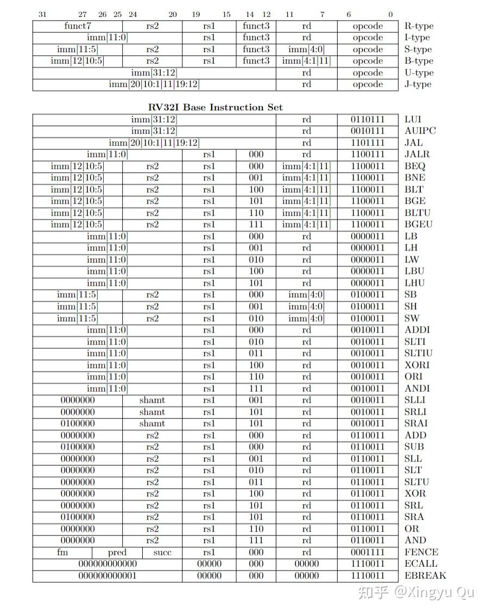
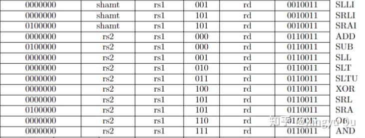
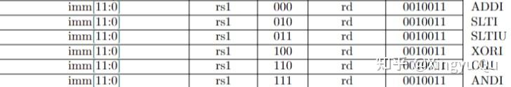
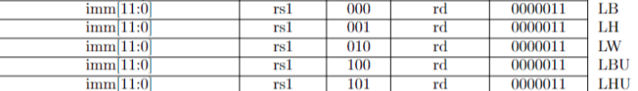
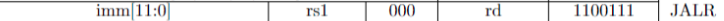
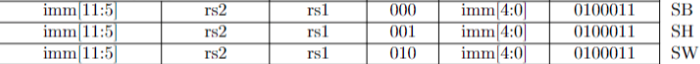
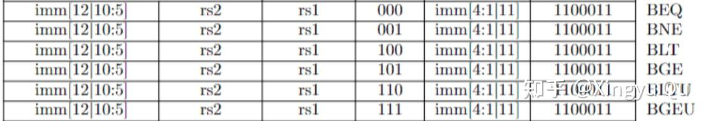
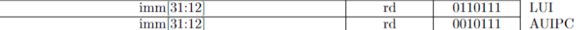

概述
本讲首先介绍 RISC-V 指令结构及其硬件含义，再集中讨论编码规整性、扩展性等设计原则。
（一）RISC-V 完整指令及分类
下表汇总了本讲涉及的 RISC-V 指令类型。

（1）R 型指令：寄存器之间的整数计算。
（2）I 型指令：立即数计算、load 与 JALR 等指令。
（3）S型指令：所有存储指令
（4）B型指令：比较跳转指令
（5）U型指令：lui和auipc指令
（6）J型指令：jal指令
rs（source）：源操作数寄存器 rd（destination）：目的数寄存器
opcode：操作码 funct：操作码扩展
（二）R型指令

1.常规计算：add, sub, and, or, xor
add rd, rs1, rs2
对于整数溢出，基础整数加减指令保留结果的低 XLEN 位，不产生算术溢出异常。
2.移位运算：sll, srl, sra
sll rd, rs1, rs2 x(rd)=x(rs1)<<x(rs2)
sra高位保留符号位，srl高位置0
3.比较运算：slt，sltu
slt rd, rs1, rs2 x(rd)=x(rs1)<x(rs2)
rd中的数会被置为0或1
sltu是无符号数比较
（三）I型指令
1.立即数计算指令

注意：I型指令的imm（立即数）只有12位，因此可表示的范围为-2^11~2^11-1
12 位立即数在参与运算前需要符号扩展到 XLEN 位。
addi rd, rs1, imm
2.load指令

lw rd, imm(rs1) x(rd) = Mem[x(rs1) + sext(imm)]
lb 加载 8 位，lh 加载 16 位，并对结果进行符号扩展；
lbu 与 lhu 对结果进行零扩展；RV32I 不需要 lwu，因为目的寄存器本身只有 32 位。
3.jalr指令

（四）S型指令
S型指令没有rd寄存器

sw rs2, imm(rs1) Mem[x(rs1) + sext(imm)] = x(rs2)[31:0]
store 指令写入 rs2 的低位，不涉及将读出的窄数据扩展到寄存器，因此没有有符号/无符号版本之分。
（五）B型指令
B型指令全部是有条件跳转指令，RISC-V的设计规定只能跳转到偶数的地址，也就是地址的二进制表示最后一位只能是0，这样最后一位其实可以不做表示。
目标地址由当前 PC 加上符号扩展后的偏移量得到；B 型立即数最低位隐含为 0，可表示约 ±4 KiB 的偶数字节偏移。

这种非连续的立即数字段布局将在本讲末尾讨论。
beq rs1, rs2, imm if (x(rs1) == x(rs2)) pc = pc + sext(imm)
beq（=）, bne（!=），blt（<），bge（>=），bltu，bgeu
（六）U型指令
U型指令只有rd寄存器

1.LUI
lui rd, imm x(rd)=imm<<12
LUI的意义是当一个立即数长度大于12位时，没法将这个数直接存进寄存器中。
LUI 可先构造高 20 位，再配合立即数指令形成更宽的常量；低 12 位的符号扩展细节通常由汇编器处理。
2.AUIPC
AUIPC rd, imm x(rd) = pc + (imm << 12)
注：当前的PC可以通过将AUIPC的imm设置为0来获得。
（七）J型指令
jal rd, imm x(rd) = pc + 4; pc = pc + sext(imm)
jal rd, label x(rd) = pc + 4; pc = label
JAL 是 RV32I 中的 J 型指令，可用于过程调用或无条件跳转。它把 pc + 4 写入 rd，并跳转到 J 型立即数给出的 PC 相对目标。
过程调用的六个步骤：
- 传参（默认x10~x17按传参顺序为参数寄存器）
- 转移控制权（PC改变，并保存原来的PC+4）
- 获取过程调用所需的存储资源（sp为x2寄存器）
- 执行过程（x5~x7,x28~x31存储临时变量，为调用者保存；x8~x9,x18~x27为被调用者保存寄存器）
- 返回结果（标量返回值通常使用 x10/a0，必要时也使用 x11/a1）
- 返回PC（jalr（I型指令））
过程调用及相关细节将在下一讲介绍。
小结：
本讲介绍了 RV32I 中的常用指令，并总结其编码设计的两个特点：
1. RISC-V的指令是高度规整化的，这为解码提供了方便，也为扩展提供可能。RISC-V还推出了向量扩展（RISC-V Vector Extension, RVV），支持处理向量数据，可以有效提升数据并行计算的性能，尤其在大规模数据处理和科学计算中有着广泛的应用。
2.RISC-V的不同类型指令也保持高度的相似性。例如，B 型与 S 型指令保持 rs1、rs2、funct3 和 opcode 字段位置一致，只重新排列立即数字段以适配分支偏移。这种设计为硬件设计提供了极大便利。